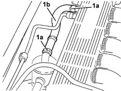
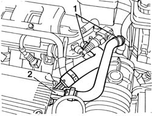
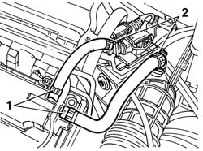
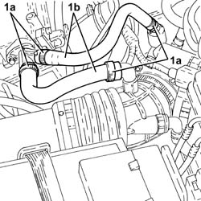
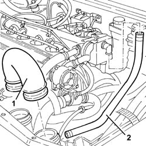
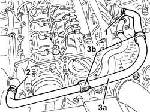

1080D14 pipe from engine oil vapour separator to intake - r + r
- Path
- Procedures > 10 ENGINE > 1080 EXHAUST EMISSION CONTROL SYSTEM > 1080D crankcase vapour/gas recirculation system > 1080D14 pipe from engine oil vapour separator to intake - r + r
- Kind
- repair procedure (removal / refitting; the operation number is the code)
- Applies to
- engines: 1.6 TS , 1.8 TS, 2.0 JTS, 2.5 V6, 1.9 JTD 8v , 2.0 JTS, 2.4 JTD 10v, 2.4 JTD 20v; all production periods
- Interactive page
- https://sloeber94.github.io/elrnDB-a156/en/#/3237593
Applies to: engines: 2.5 V6; all production periods
 Removing
Removing
 Refitting
Refitting1. Loosen the bands (1a) and remove the pipe between engine oil vapour separator and intake (1b).

Applies to: engines: 2.5 V6; all production periods
Refitting
RemovingFit the pipe between engine oil vapour separator and intake and fix it using the bands.
Applies to: engines: 1.6 TS ; all production periods
Removing
Refitting1. Disconnect the pipes (1a) from the integrated butterfly casing and the pipe (1b) from the corrugated hose.
2. Undo the bolt for the oil vapour duct and remove it from the cylinder head complete with pipes.

Applies to: engines: 1.6 TS ; all production periods
1016A40 ignition coil cover on cylinder head- r+r
1. Disconnect the oil vapour inlet pipes from the tappet cover.
2. Disconnect the oil vapour inlet pipes from the integrated butterfly casing and from the corrugated hose, then remove them.

Applies to: engines: 1.6 TS ; all production periods
Refitting
RemovingFit the oil vapour inlet pipes and fix them using the bands.
Applies to: engines: 1.6 TS ; all production periods
Fit the duct connector complete with pipes.
Connect the oil vapour inlet pipes to the corrugated hose and to the integrated butterfly casing.
Fix the duct connector using the bolt.
Applies to: engines: 2.0 JTS, 2.0 JTS; all production periods
Removing
RefittingProceed with removal 1016A40 ignition coil cover on cylinder head- r+r .
1. Loosen the bands (1a) and remove the engine oil vapour recovery pipes (1b).

Applies to: engines: 2.0 JTS, 2.0 JTS; all production periods
Refitting
RemovingPlace the engine oil vapour recovery pipes back in their housings and fasten them using the bands.
Proceed with refitting 1016A40 ignition coil cover on cylinder head- r+r .
Applies to: engines: 1.9 JTD 8v , 2.4 JTD 10v; all production periods
Removing
Refitting1. Remove the rigid hose between the air filter and the turbocharger.
2. Remove the pipe between the oil vapour separator and the inlet.

Applies to: engines: 1.9 JTD 8v , 2.4 JTD 10v; all production periods
Refitting
RemovingFit the pipe between the engine oil vapour separator and the inlet.
Fit the rigid hose from the air filter to the turbocharger.
Applies to: engines: 2.4 JTD 20v; all production periods
Removing
RefittingProceed with removal 1016A10 sound-proofing cover - r + r .
1. Loosen the band and disconnect the oil vapour pipe from the separator to the intake, separator side.
2. Loosen the band and disconnect the oil vapour pipe from the separator to the intake, on the side of the air inlet pipe to the turbocharger.
3. Remove the oil vapour pipe from the separator to the inlet (3a) after releasing it from the bands (3b).

Applies to: engines: 2.4 JTD 20v; all production periods
Refitting
RemovingRefit the oil vapour pipe from the separator to the intake in its seating and secure it with the bands.
Connect the oil vapour pipe from the separator to the intake, on the side of the air intake pipe to the turbocharger and tighten the band.
Connect the oil vapour pipe from the separator to the intake, separator side, and tighten the band.
Proceed with refitting 1016A10 sound-proofing cover - r + r .